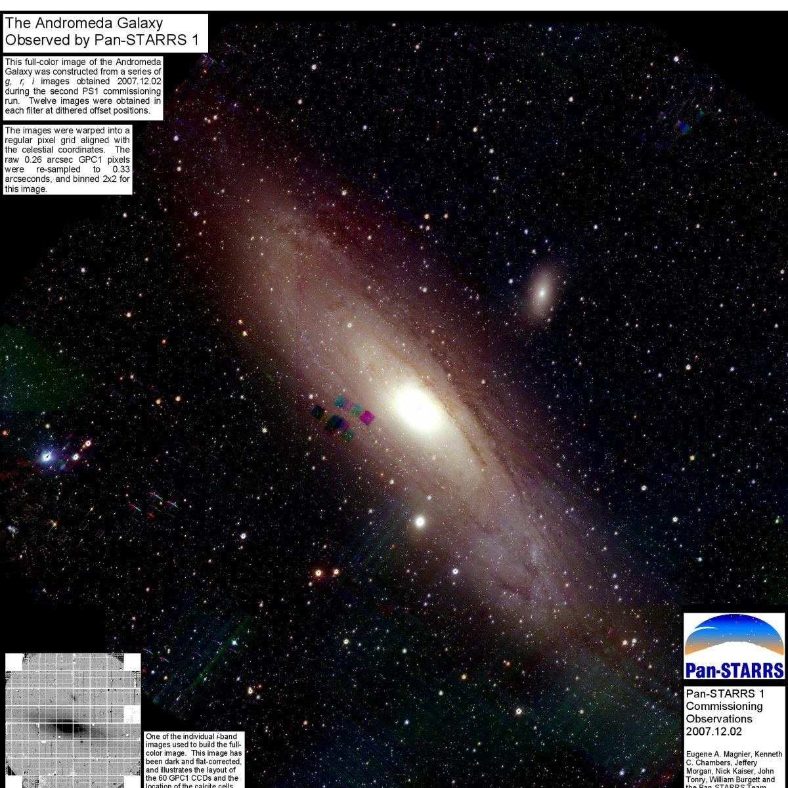

{kind=link}
- Progenitors of Type Ia supernovae.
- See Wood-Vasey and Sokoloski 2006, ApJL 645, L53.
- Surveys for binary progenitors systems in the Milky Way.
- Radiative hydrodynamic modeling of Type Ia supernova progenitor systems. (Still in very early stages.)
- Search for Transiting Extrasolar Planets at the University of Pittsburgh (STEPUP). We are following-up candidate targets from the SDSS-III MARVELS project to search for potentially transiting systems. This work has been led by Melanie Good, MS in Physics (2011), and continues through a team of undergraduates.
- Pan-STARRS1.
- Type Ia supernova cosmology.
- Transient and Variable Event Classification and Detection.

Past Research
- ESSENCE: Measuring the dark energy equation-of-state parameter with Type Ia supernovae. See Wood-Vasey et al. 2007, ApJ 666, 694.
- Cluster abundance cosmology through SZ surveys
- Current and upcoming surveys such as the South Pole Telescope (SPT) and the Atacama Cosmology Telescope (ACT) will provide a map of clusters detected via the Sunyaev-Zel'dovich effect, which is independent of redshift. Complementary optical observations will determine spectroscopic redshifts to these cluster while X-ray observations with satellites such as the Chandra X-Ray Observatory will measure the baryonic mass through measurements of the hot electron gas. See High et al., 2010, ApJ, 723, 1736.
{kind=link}
Teaching and Outreach
University of Pittsburgh
- Astronomy 1100: "Special Topics: The Solar System and Extrasolar Planets", Fall 2012.
- Astronomy 89: Stars, Galaxies, and the Cosmos (Spring 2010, Fall 2010, Spring 2012)
- Astronomy 3580: Galactic and Extragalactic Astronomy (Fall 2009)
- Astronomy 1263: Stars, Galaxies, and the Cosmos (Spring 2009, Spring 2011, Spring 2013)
Harvard
- Astronomy 97hf: Introductory Sophomore Tutorial (Fall 2007-Spring 2008)
A course on practical techniques in observational astronomy. We cover telescopes, optics, CCDs, data reduction, IDL, catalogs, SDSS, skycalc, LaTeX, ds9, and other common tools of the (optical) astronomy. This menagerie of topics will come together in a year-end project that will incorporate all of these techniques and resources into a final paper and presentation on an astronomical topic directed by the students. - Freshman Seminar 24z: The Hidden Universe: Dark Matter, Dark Energy, and Extra Dimensions
Co-taught with Christopher Stubbs. Reading, discussion, and analysis of history and current topics in cosmology, including the largest outstanding questions of the day which point toward new fundamental physics.
Outreach and Press
- SDSS-III Press Releases
- Talking about SDSS-III on the 365 Days of Astronomy Podcast. Interview by Diane Turnshek. December 15, 2011.
- Pitt Researchers Tackle Flood of Space Data With $1.6 Million Project. By Karen Hoffman. University of Pittsburgh News. June 28, 2011.
- "The Transient Universe." Unitarium Forum. October 17, 2010. "Pitt Planet Hunters Track Long, Strange Voyage of Distant Planet as Part of International Collaboration." By Morgan Kelly and Karen Hoffman. Sep 27, 2010.
- "Pitt astronomer watches the expanding Universe." By Sean Hamill. Pittsburgh Post-Gazette. Tuesday, August 11, 2010 - Feature article on Pan-STARRS, dark energy, and supernova cosmology.
- "Pitt professor tackles universe." By Ellen Mitchell. Pittsburgh Tribune-Review. Sunday, July 4, 2010 - Article on the official start of the Pan-STARRS survey telescope in Hawaii.
- "Pitt Astronomer Leads Search for Supernovae, Star-Gobbling Black Holes for International Telescope Project." By Morgan Kelly. University of Pittsburgh News.
- "Pitt professor among galaxy of researchers." By Mike Cronin. Pittsburgh Tribune-Review. Wednesday, September 29, 2010
- Pitt Science Days Lecture on Allegheny Observatory, October 2009.
- Lecture to the Amateur Astronomy Association of Pittsburgh, Oct 2, 2009.
- Interviewed by SEED magazine on dark energy and cosmology. Sep 28, 2009.
- Carnegie Science Center, Cafe Scientifique, June 1, 2009: "The Dynamic Universe: Observing the Changing Sky Throughout the Cosmos."
- Allegheny Observatory public lecture, May 15, 2009: "The Transient Sky."
- Appearance on WQED special on Allegheny Observatory. April 2, 2009.
- Radio interview on "Overnight America", KMOX, on the Large Synoptic Survey Telescope. Mar 5, 2009.
- Interviewed by Science Watch about the ESSENCE Supernova Survey, "Observational constraints on the nature of dark energy: First cosmological results from the ESSENCE supernova survey"
- Radio interview on William Herschel on WQED. February 2009.
- Dark Energy at Sunrise
The WUML Sunrise program at the University of Massachusetts, Lowell on dark energy, astronomy, exploration, and the joy of science. - Interview on String Theory
An interview on string theory and extra dimensions with a pretty sharp high-school student.
First- and Second-Author Papers
-
An Unbiased Method of Modeling the Local Peculiar Velocity Field with Type Ia Supernovae
[ADS]
A. Weyant, W. M. Wood-Vasey, L. Wasserman, P. Freeman. ApJ, 2011, Vol 732, Issue 1, p. 65.
-
Type Ia Supernova Light-Curve Inference: Hierarchical Bayesian Analysis in the Near-Infrared
[ADS]
K. S. Mandel, W. M. Wood-Vasey et al. ApJ, 2009, Vol 704, Issue 1, pp. 629-651.
-
Improved Dark Energy Constraints from ~100 New CfA Supernova Type Ia Light Curves
[ADS]
M. Hicken, W. M. Wood-Vasey et al. ApJ, 2009, Vol 702, Issue 2, pp. 1097-1140.
-
Type Ia Supernovae are Good Standard Candles in the Near Infrared: Evidence from PAIRITEL
[PDF]
[ADS]
astro-ph/0711.2068
W. M. Wood-Vasey et al. ApJ, 2008, Vol 689, Issue 1, pp. 377-390.
-
Observational Constraints on the Nature of Dark Energy: First Cosmological Results from the ESSENCE Supernova Survey
[PDF] [ADS] astro-ph/0701041
W. M. Wood-Vasey et al. ApJ, 2007, Vol 666, Issue 2, pp. 694-715.
DOI:10.1086/518642
Supplemental information available at http://www.ctio.noao.edu/essence/wresults.
-
Novae as a Mechanism for Producing Cavities around the Progenitors of SN 2002ic and Other SNe Ia
[ADS] astro-ph/0605635
W. M. Wood-Vasey and J. L. Sokoloski. ApJL, 2006, Vol 645, pp. L53-L56.
DOI:10.1086/506179
-
Photometry of SN 2002ic and Implications for the Progenitor Mass-Loss History
[ADS] astro-ph/0406191
W. M. Wood-Vasey, L. Wang, G. Aldering. ApJ, 2004, Vol. 616, pp. 339-345.
DOI: 10.1086/424826
-
The Nearby Supernova Factory [PDF] [PS] [ADS] astro-ph/0401513
W. M. Wood-Vasey, G. Aldering, B. C. Lee, S. Loken, P. Nugent, S. Perlmutter, J. Siegrist, L. Wang, P. Antilogus, P. Astier, D. din, R. Pain, Y. Copin, G. Smadja, E. Gangler, A. Castera, G. Adam, R. Bacon, J-P. Lemonnier, A. Pecontal, E. Pecontal, R. Kessler. Conference proceedings for Workshop on Supernovae and Dust held in Paris, France, 16-17 May, 2003.
DOI: 10.1016/j.newar.2003.12.056
-
Computational Modeling of Classical and Ablative Rayleigh-Taylor Instabilities [PDF] [PS]
W. M. Wood-Vasey, K. S. Budil, B. A. Remington, S. G. Glendinning, A. M. Rubenchik, M. Berning, J. O. Kane, and J. T. Larsen. Lasers and Particle Beams, 2000, Vol. 18, Issue 04, pp. 583-593.
Dissertation
-
Rates and Progenitors of Type Ia Supernovae
[PDF]
W. M. Wood-Vasey, Ph.D. Dissertation in Physics, UC Berkeley, Dec 2004.
Dissertation Co-Chairs: Saul Perlmutter and George Smoot.
All Publications
MWV Group Theses and Dissertations
-
August 2011. Melanie Good. Master Thesis on the creation and first results from Survey of Extrasolar Planets at the University of Pittsburgh (STEPUP).
-
April 2013. Shailendra Vikas. Ph.D. Dissertation on Quasars, Carbon, and Supernovae: Exploring the Distribution of Elements in an Expanding Universe.
Michael Wood-Vasey
Last modified: Fri Feb 13 09:27:00 EST 2008